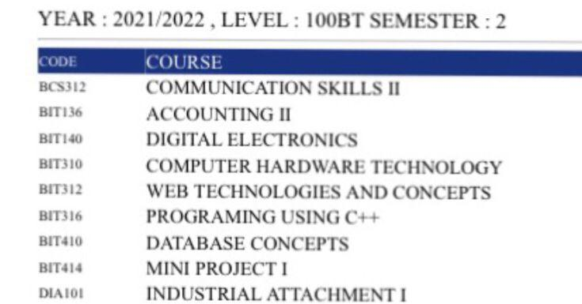
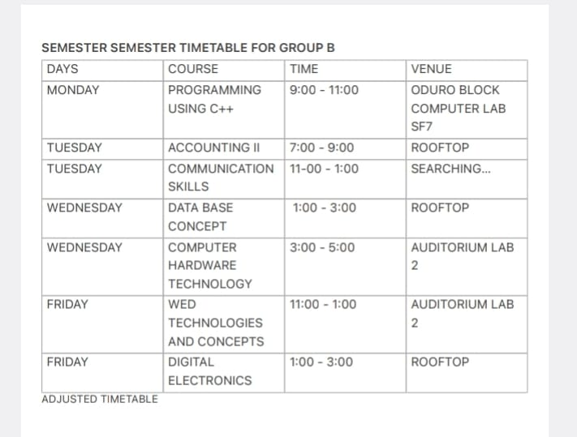

💫 ABOUT
Hi, I'm Isaac Ocran, a 23 year old level 100 student at TTU. I'm from Agona-Nkwantabut currently resides at Axim, western part of Ghana. I live with my uncle called Mr.Ocran.
I'm the fifth born. I'm passionate about driving and I enjoy watcing running competition
and playing games like racing. I love to leave alone.
So far, I have achieved several awards due to my hard work and high self esteem.
Some of them include best runner at my former JHS, cadet and library awards from my
formal SHS, Gwiraman Senior High School.
Growing up, I was very fascinated about elctronics and spent many hours repairing
electronics gadget .This has spark ignited I power that has driven me to pursue my dreams
and overcome obstacles.
 
Click here to read more about the courses
Testimonials
- John Doe
-Bob Johnson
say that they are one of the most creative and innovative individuals I have ever met. Thier
ability to think outside the box and come up with unique solutions is impressive, and thier
passion for work is inspiring."-Sarah Lee' Colleque